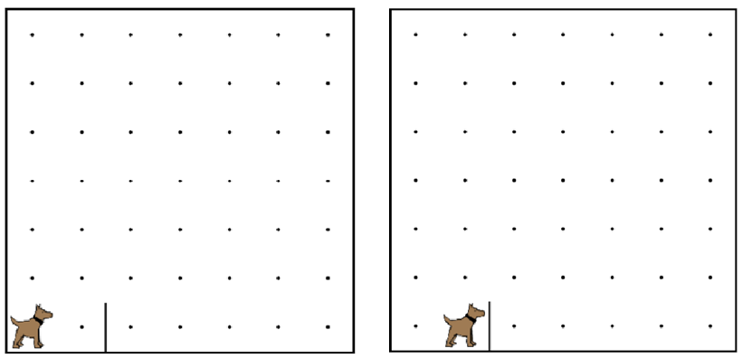

This is an example that we did in the video.
You are encouraged to play around with it, to see how it all works.
When you are done, click the arrow to go to the next problem.
這是我們在視頻中做了一個榜樣。我們鼓勵你玩它，看看它是如何工作的。當你完成後，單擊箭頭進入下一個問題。

function start(){ 函數的開始(){
move(); 移動();
if(frontIsClear()){ 如果（前面是明確的()）{
move(); 移動();
}
}
/* You can try commenting in this start function to see what happened before.
/* 您可以嘗試在評論這個啟動功能，看看之前發生的事情。
/* If we try to move twice here, then karel will crash into a wall.
/* 如果我們試圖在這裡兩次移動，然後卡雷爾將撞上一堵牆。
function start(){ 函數的開始(){
move(); 移動();
move(); 移動();
}
*/